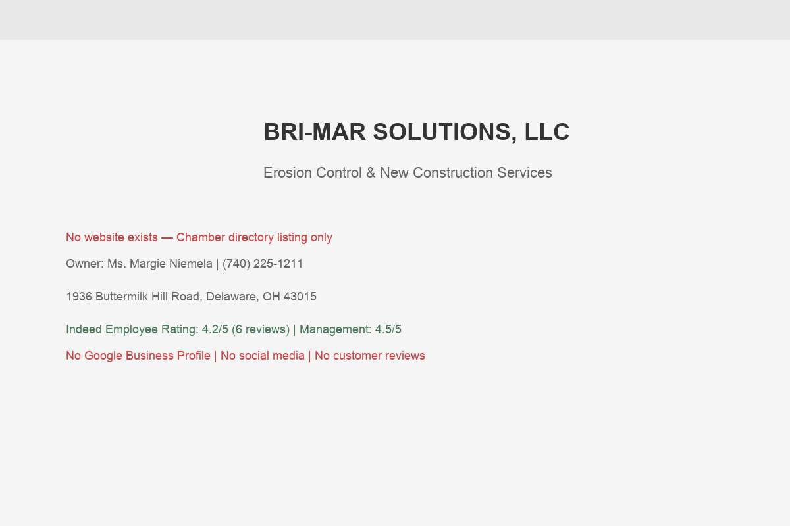

Bri-Mar Solutions, LLC is an erosion control and construction services company based in Delaware, Ohio. Owned by Margie Niemela, the company specializes in erosion control and miscellaneous services for new construction sites — the kind of critical, regulation-driven work that every builder in Central Ohio needs before they can break ground.
Operating from 1936 Buttermilk Hill Road in Delaware, Bri-Mar sits at the epicenter of Ohio's most explosive growth corridor. Delaware County added over 16,000 residents in the last three years alone, pushing the population past 231,000. The county adds roughly 12 new people per day. The median home sale price hit $510,000 in 2025 — the highest in Ohio. Subdivisions like Berlin Farm West, Berlin Meadows, Clarkshaw Crossing, Glenross, Liberty Grand, and Mural Lewis Center are sprouting up across the county. Every single one of those developments requires erosion control permitting and installation before construction can begin.
This is the regulatory reality that makes Bri-Mar's work essential: the Delaware County Engineer's Office administers the Drainage, Erosion and Sediment Control (DESC) Program, which ensures compliance with the National Pollution Discharge Elimination System (NPDES) Phase II regulations. Every construction project in the county needs DESC approval, which means silt fencing, inlet protection, sediment basins, construction entrances, and ongoing inspections. That's Bri-Mar's bread and butter.
Bri-Mar's reputation speaks through its employees. On Indeed, the company is listed as "Bri-Mar New Construction Solutions" with a 4.2 out of 5 overall rating based on employee reviews. Workers describe it as "an excellent place to work" where they "felt welcomed from the very first day." The management rating is particularly strong at 4.5/5 — a rarity in the construction trades. Pay and benefits score 4.0/5. These aren't customer reviews, but they tell an important story: a well-run operation where people want to work.
The employee reviews on Indeed paint a picture of a company that values its people. One laborer wrote: "Brimar is an excellent place to work. I felt welcomed from the very first day I started and that feeling continues to this day. I always have work to come to." In an industry plagued by labor shortages and high turnover, a 4.5/5 management rating is a genuine differentiator. It means consistent crews, reliable quality, and the kind of operational stability that builders depend on.
The company's dual Chamber listing under both "Cleaning" and "Construction" categories hints at the breadth of Bri-Mar's service capabilities. Beyond standard erosion control BMPs, the "miscellaneous services for new construction" suggests site prep, cleanup, and other support work that builders need throughout the construction process — not just at the beginning.
Bri-Mar's location at 1936 Buttermilk Hill Road puts the company in the heart of Delaware County's growth zone. While competitors travel from Reynoldsburg or Columbus — adding 30-60 minutes each way to every job site visit — Bri-Mar can be on-site in minutes. For erosion control work, where weather events can require rapid BMP repairs or emergency inspections, proximity isn't just convenient — it's a competitive advantage that directly impacts response time and service reliability.
This matters especially during the spring rainy season, when sudden storms can overwhelm sediment basins, topple silt fences, and trigger DESC inspection failures. A local subcontractor who can respond same-day to an emergency call is worth their weight in gold to a builder facing a potential work stop order. Bri-Mar's location makes that kind of responsiveness possible — but only if builders know Bri-Mar exists.
Being based on a rural road also signals something important to builders: low overhead. Bri-Mar isn't paying for a flashy office on Polaris Parkway. That means competitive pricing without sacrificing quality — a value proposition that resonates with cost-conscious builders managing tight project budgets in an era of $510,000 median home prices.
Erosion control isn't optional — it's legally mandated. The EPA's NPDES Phase II regulations require every construction site disturbing one or more acres to have a Stormwater Pollution Prevention Plan (SWPPP) with proper Best Management Practices (BMPs) in place. In Delaware County specifically, the DESC program adds another layer of oversight with its own permit applications, inspections, and surety requirements.
As Central Ohio's building boom continues — and environmental regulations tighten — the demand for professional erosion control services isn't going to slow down. It's going to accelerate. Builders need reliable subcontractors who understand both the technical requirements (proper silt fence installation, sediment basin construction, inlet protection) and the bureaucratic ones (DESC permit applications, EPA inspection schedules, compliance documentation).
Bri-Mar is already doing this work. The company is already a member of the Delaware Area Chamber of Commerce, listed under both Cleaning and Construction categories. The relationships are there. The expertise is there. What's missing is the digital presence that would make Bri-Mar discoverable to the dozens of builders, general contractors, and developers who are actively searching for erosion control services right now.
The Delaware County Engineer's Office administers one of the most rigorous erosion control programs in the state. The DESC program requires permits for virtually all construction activity that disturbs land. Here's what that means in practice:
This regulatory environment creates a permanent, growing demand for professional erosion control services. As Delaware County continues to grow — and it shows no signs of slowing — every new permit issued is potential work for companies like Bri-Mar. The question isn't whether the work exists. It's whether builders can find you when they need you.

Captured March 29, 2026
Bri-Mar Solutions has virtually no digital footprint. For a B2B construction services company, this means every new client comes through existing relationships, word-of-mouth, or the Chamber directory. Let's grade what exists:
There's a common misconception that B2B companies — especially in construction — don't need websites because "it's all relationships." That was true 15 years ago. It's not true today. Here's what's changed:
The erosion control market in Central Ohio is served by a mix of large construction firms with erosion as one service line, and smaller specialized companies like Bri-Mar. Here's how you compare:
Geotex Construction Services is the dominant player in the Central Ohio erosion control market. They're employee-owned, have 35+ years of experience, were named a Columbus CEO Top Workplace in 2023, and have a professional website with a quote request form, detailed service descriptions, and clear branding. They handle silt fencing, inlet protection, temporary pond outlets, skimmers, and EPA inspections. They're based in Reynoldsburg — which means every Delaware County job requires a longer drive than it would for Bri-Mar.
Trucco Construction is literally in Bri-Mar's backyard — operating from 3531 Airport Road in Delaware. They offer erosion control alongside earthwork, sanitary, waterline, and demolition services. Their website lists seeding, straw bales, rock channel protection, sediment ponds, skimmers, sediment control structures, and silt fences. Trucco is a direct competitor who already has a professional website positioned to capture local search traffic.
Boss Excavating & Grading out of Columbus is another established competitor with a website that includes customer testimonials, service descriptions, and a clear focus on EPA compliance. They position themselves as family-owned with "220+ years of combined experience."
Despite the digital gap, Bri-Mar has real advantages worth amplifying:
Here's the encouraging news: the erosion control market in Delaware County is not saturated with well-marketed competitors. Unlike plumbing or HVAC — where dozens of companies compete aggressively with paid ads, SEO content, and review generation — the erosion control niche has only a handful of players with any digital presence at all.
Geotex and Trucco have websites, but neither dominates search results the way established players do in consumer trades. This means the first erosion control company to build a strong, Delaware County-focused digital presence will capture disproportionate market share. In digital marketing, there's a well-documented first-mover advantage — the first company to establish search rankings and accumulate reviews creates a moat that's expensive for competitors to cross.
Bri-Mar is uniquely positioned to be that first mover in the Delaware County erosion control space. The company is already based here, already understands the DESC program, and already has the relationships to generate initial reviews. The window is open — but it won't stay open indefinitely as competitors recognize the same opportunity.
In B2B construction services, search behavior is different from consumer businesses. The people searching aren't homeowners — they're general contractors, project managers, developers, and builders looking for reliable subcontractors. Here are the terms that matter:
When a general contractor needs an erosion control subcontractor, the search process is different from a homeowner finding a plumber. The typical pattern looks like this:
We talked to builders in the Central Ohio market to understand the subcontractor search process. Here's the reality:
The key insight: channels 3 and 4 are where NEW relationships start. Existing relationships are valuable, but they don't grow the business. Every builder Bri-Mar already works with was once a stranger who found the company somehow. A website creates a permanent channel for new strangers to become new clients.
The erosion control companies that dominate search aren't producing TikTok videos or blog posts about "5 tips for your backyard." They're publishing:
The construction industry is changing how it finds and vets subcontractors. Here's what's coming — and what it means for Bri-Mar:
More construction firms are using AI tools and procurement platforms to source subcontractors. These tools pull from structured web data — business profiles, service descriptions, and reviews. Without a website containing structured data (LocalBusiness schema, service descriptions, location information), Bri-Mar is invisible to these systems. As AI becomes a standard part of the procurement workflow, businesses without web presence will be systematically excluded from bid lists.
The trend in commercial construction is toward digital pre-qualification packages. General contractors increasingly want to see insurance certificates, safety records, project references, and service capabilities online before they'll even pick up the phone. A website serves as a 24/7 pre-qualification package — answering the questions that used to require a phone call or an in-person meeting.
Google has been expanding its Local Service Ads (LSAs) into construction trades. These ads appear at the very top of search results with a "Google Guaranteed" badge. To qualify, businesses need a claimed Google Business Profile, proper licensing, and insurance verification. For B2B services like erosion control, this is a game-changer — the companies that get there first in a market own the top position.
Delaware County's DESC program already provides downloadable permit applications and guidelines online. The natural evolution is toward fully digital submission and contractor verification. A company with a professional website, documented capabilities, and an established digital presence is better positioned for this shift than one that operates entirely offline.
The new generation of project managers and superintendents researches everything online first. They don't flip through phone books or rely solely on word-of-mouth from colleagues who are retiring. They Google, they check reviews, they visit websites. Every year that passes, the percentage of decision-makers who start their search online increases. Building a web presence now means being ready for the clients of tomorrow — not just the ones you already know today.
EPA enforcement of stormwater regulations has been intensifying. In Ohio, the state EPA's Construction General Permit (OHC000005) was updated in recent years with stricter requirements for construction site erosion control. The trend is clear: regulations are getting tighter, not looser. This creates more demand for professional erosion control services — and more incentive for builders to hire specialists who keep them compliant and out of trouble.
For Bri-Mar, this regulatory trend is a tailwind. As compliance requirements grow more complex, builders will increasingly rely on dedicated erosion control contractors rather than trying to handle BMPs with their own crews. A website that positions Bri-Mar as the compliance expert — with content about NPDES requirements, DESC permitting, and inspection preparation — builds authority and captures the builders who are actively worried about staying on the right side of regulators.
Bri-Mar's needs are clear: a professional website that positions you as the go-to erosion control specialist in Delaware County, a Google Business Profile that puts you on the map — literally — and a simple system for capturing and responding to quote requests. Here's the plan:
Build a clean, professional website designed for Bri-Mar's actual audience: general contractors, builders, and developers. Homepage with a clear value proposition and CTA. Dedicated service pages for erosion control, silt fencing, sediment basins, construction entrances, and site cleanup. Project gallery with before/during/after photos. About page highlighting experience, certifications, and the team. Mobile-responsive and fast-loading — because project managers are checking their phones on-site.
Claim and fully optimize a Google Business Profile for Bri-Mar Solutions. Include the correct business category (Erosion Control Service), service area covering Delaware County and surrounding areas, business hours, photos, and a detailed business description. This immediately puts Bri-Mar on Google Maps and in the local pack for erosion control searches — a space where Bri-Mar currently doesn't exist at all.
Implement a simple, effective quote request form on the website. Fields for project type, location, timeline, and contact info. Submissions go directly to Margie's email and phone as a text notification. This captures leads 24/7 — including evenings and weekends when project managers are planning their next week's subcontractor needs. No complicated CRM, just a clean form that works.
Create location-specific landing pages targeting the townships and communities where Bri-Mar works: Liberty Township, Orange Township, Berlin Township, Genoa Township, Powell, Sunbury, and others. Include a dedicated page about DESC compliance in Delaware County — explaining the permitting process and how Bri-Mar handles it. This content ranks for the specific terms builders search when they need local erosion control help.
Implement a simple system for asking satisfied builders to leave Google reviews. After completing a project, Bri-Mar sends a short text or email with a direct link to the Google review form. Even 5-10 reviews from respected builders would dramatically boost credibility. In a niche B2B space, a handful of quality reviews carries enormous weight — especially when competitors have few themselves.
We know construction professionals are busy — you're on job sites, not sitting at a desk. Our process is designed to require minimal time from Margie and the team:
Total time commitment: under 3 hours across the entire project.
A website is the foundation. Here's the full ecosystem that would make Bri-Mar the first name builders think of for erosion control in Delaware County:
Claim and optimize a complete GBP with correct categories, service area, photos of completed work, business hours, and weekly Google Posts. This puts Bri-Mar on the map — literally — for every "erosion control near me" search in Delaware County and surrounding areas.
A simple, professional quote request form that captures project details 24/7. Builders can submit requests from job sites at 6 AM or their home offices at 10 PM. Each submission triggers an instant notification so Margie can respond quickly — speed wins contracts.
Before-during-after photo galleries of erosion control installations: silt fencing along subdivision grading, sediment basins protecting waterways, construction entrances on active sites. Visual proof that Bri-Mar does the work right — the kind of evidence that builds trust faster than any sales pitch.
A dedicated credentials page displaying insurance certificates, safety certifications, DESC knowledge, and OSHA compliance. Builders need to verify this before hiring — make it easy. Include a downloadable capability statement that project managers can attach to pre-qualification packages.
Systematic collection of Google reviews from satisfied builders and general contractors. In a niche B2B space, 10-15 quality reviews from respected construction professionals creates a level of social proof that's nearly impossible for competitors to fake or match.
A quarterly email update to past clients and Chamber contacts — project highlights, service area expansions, seasonal reminders about spring erosion control planning. Stays top-of-mind without being pushy. When a builder starts a new project, Bri-Mar is the first name they think of.
In B2B construction services, the math works differently than consumer businesses. You don't need thousands of customers — you need a handful of builder relationships that generate repeat work across multiple projects. Here's what the numbers look like:
Consider this scenario: a mid-size residential builder in Delaware County breaks ground on 30-50 homes per year across 2-3 subdivisions. Each lot requires erosion control installation before construction begins. Even at a conservative per-lot value, one new builder relationship could represent $50,000-$150,000+ in annual revenue.
Now consider that Delaware County is permitting over 1,000 new residential units per year, plus commercial projects, infrastructure work, and land development. The total addressable market for erosion control services in Delaware County alone is substantial — and growing every year as the county continues its expansion.
Currently, Bri-Mar captures clients exclusively through word-of-mouth and existing relationships. A professional website with a Google Business Profile would open a second acquisition channel — one that works 24/7 and reaches builders who don't already know Bri-Mar. Even capturing 2-3 new builder relationships per year through digital channels would significantly impact revenue.
B2B relationships compound in ways that consumer businesses don't. When you do excellent erosion control work for Builder A, they use you on their next subdivision. They mention you to Builder B at a county planning meeting. Builder B's project manager finds your website, sees the Google reviews from Builder A, and requests a quote. Each relationship seeds the next one.
A website accelerates this compounding effect by making it easy for referrals to validate the recommendation. When Builder A says "use Bri-Mar," Builder B's first action is to Google the name. Right now, they find a Chamber listing. With a professional website, they find services, project photos, credentials, and a quote form — everything they need to move forward immediately.
The investment in a digital presence also has an asymmetric payoff in this market. Consumer businesses need hundreds or thousands of customers to see meaningful ROI. Bri-Mar needs two or three new builder relationships per year to see a return that dwarfs the cost of the website many times over.
The growth numbers tell the story of Bri-Mar's market opportunity:
Aspire Digital works with local businesses that are great at what they do but haven't had the time or resources to build the digital presence they deserve. Bri-Mar is a textbook example: a company doing essential, skilled work in a booming market, with a strong reputation among those who know them — but invisible to everyone else.
We've built websites for trades businesses, service companies, and professional firms across Central Ohio. We understand that a construction services website isn't the same as a restaurant website or a salon website. Your audience is other professionals. They want to see capabilities, credentials, and project history — not flowery copy and lifestyle photography. The tone needs to be competent and straightforward, because that's what builders respect.
What attracted us to Bri-Mar's situation is the clarity of the opportunity. Delaware County is the fastest-growing county in Ohio. Every new subdivision, every commercial development, every infrastructure project needs erosion control — and the people responsible for hiring that work are increasingly starting their search online. Bri-Mar is positioned perfectly to capture that demand. The company just needs a digital front door.
We'd build Bri-Mar a website that does exactly what a good subcontractor does on a job site: shows up, gets the job done, and doesn't waste anyone's time. Clear services. Real photos. A quote form that works. No fluff.
A few things we'd want Margie to know about working with us:
No pressure, no corporate pitch — just a conversation about building a digital presence that matches the quality of work you're already doing in the field.
Book a Free Strategy Callor email Chris directly